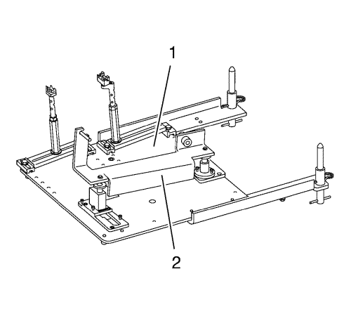

Sustitución del soporte del motor — con CH-49290
Herramientas especiales
| • | CH-49290 Herramienta de soporte del motor |
Si desea informarse sobre herramientas regionales equivalentes, consultar Herramientas especiales .
Procedimiento de desmontaje

Nota: El manual de montaje de SPX se suministra con la herramienta especial y también está disponible en línea directamente en SPX. Vaya a www.spxtools-shop.com.
- Coloque la herramienta de soporte del motor CH-49290 (1) siguiendo las instrucciones del manual de instalación SPX.
- Monte el soporte del par (2) en el motor.
- Apoye el bastidor base CH-904 en un gato.
- Apoye la herramienta de soporte del motor CH-49290 sobre el bastidor base CH-904.

Nota: El manual de montaje de SPX se suministra con la herramienta especial y también está disponible en línea directamente en SPX.
- Instale la herramienta de soporte del motor CH-49290 (1) siguiendo las instrucciones del manual de instalación SPX.

Nota: NO desmonte los tubos flexibles de líquido de la dirección asistida y de refrigerante de los depósitos de líquido de la dirección asistida y compensación de refrigerante.
- Extraiga los 2 pernos (1) del depósito del líquido de la dirección asistida, desenganche el depósito y apóyelo sobre el motor.
- Retire los dos tornillos (2).
- Recoloque y retenga el depósito de compensación de refrigerante (5) del montaje del motor para facilitar la extracción de este último.

- Extraiga las 2 tuercas del soporte del motor (2).
- Extraiga el perno (3) del montaje del motor.
- Extraiga los 3 pernos de retención (1) del soporte del motor a la carrocería.
- Desmonte el soporte del motor (4).
Procedimiento de montaje
- Monte el soporte del motor (4).
Precaución: Consulte Precaución con las fijaciones en la sección Prólogo
- Introduzca los 3 pernos de retención (1) del soporte del motor a la carrocería y apriételos a 50 N·m (37 lib. pie).
- Introduzca el perno (3) y apriételo a 58 N·m (43 lib. pie).
- Introduzca las 2 tuercas (2) y apriételas a 58 N·m (43 lib. pie).
- Monte el depósito de compensación de refrigerante (5).
- Apriete los 2 pernos (2) a 9 N·m (80 lib. pulg.)..
- Enganche el depósito del líquido de la dirección asistida al depósito de compensación de refrigerante.
- Apriete los 2 pernos (1) a 9 N·m (80 lib. pulg.)..
- Desmonte la herramienta (1) del soporte del motor CH-49290
- Extraiga la herramienta de soporte del motor CH-49290 del bastidor base CH-904.
- Retire el bastidor base CH-904 del gato.
- Desmonte la herramienta de soporte del motor CH-49290 (1).
- Retire el soporte del par (2) del motor.
| © Copyright Chevrolet Europe. Reservados todos los derechos |